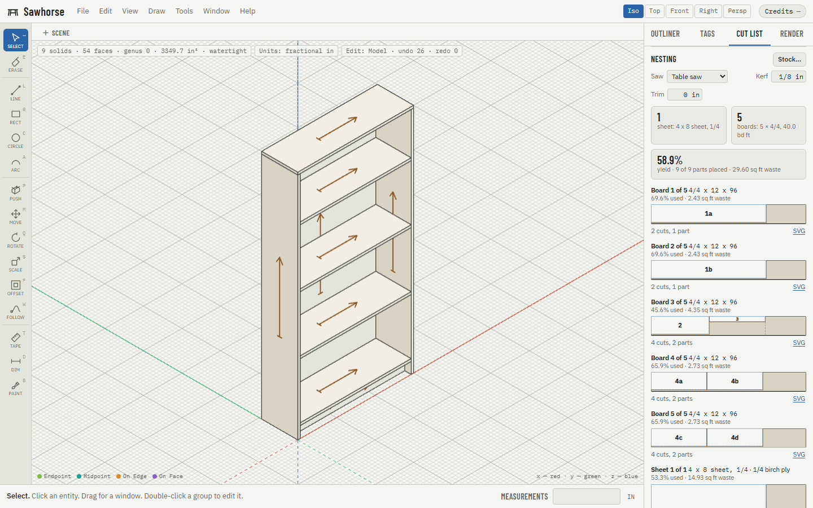

Sawhorse
Free, local-first, open-source SketchUp-style modeling for woodworkers and makers.
Draw a rectangle, push it up, type 3/4 and press Enter. The keys your hands already know, a cut list that lays out your sheets and boards, and files that print and cut.
What it does
Made for the shop.
Opens .skp, exports watertight
Bring SketchUp models in (2013 and later, with known limits), with their groups, components, layers and soft edges. Every STL and 3MF that leaves is a closed solid, ready for the slicer or the CNC.
Cut list and nesting built in
Parts, finished sizes, grain and board feet on the rough lumber you buy, as you draw, even from furniture that is not a closed solid; sheets and boards laid out with your kerf, and cutting diagrams as SVG, DXF and PDF.
Offline, no account
Your models stay on your machine. No sign-up, no subscription, no tracking. The browser version uploads nothing, and the desktop app works with the network unplugged.
How it compares
Sawhorse is an alpha. Here is where it stands next to what most woodworkers use today, as of 12 October 2026.
| Sawhorse 0.1 alpha | SketchUp Free | SketchUp with OpenCutList | |
|---|---|---|---|
| Price | Free | Free | SketchUp Pro subscription, billed monthly or yearly; OpenCutList free |
| Account required | No | Yes (Trimble ID) | Yes (Trimble ID, for the subscription) |
| Works offline | Yes (desktop app; the browser version needs the network only to load) | No (a web app) | Yes (desktop app) |
| Windows / macOS / Linux / browser | Yes / Yes / Yes / Yes | Browser only | Windows and macOS; extensions do not run in the browser versions |
| Cut list with board feet | Built in | No (no extensions) | Yes, with OpenCutList |
| Sheet and board nesting | Built in (sheets and boards, kerf, grain) | No | Yes, with OpenCutList |
| Opens .skp | Yes, SketchUp 2013 and later, with known limits | Yes | Yes |
| Watertight STL / 3MF | Yes: both, and an open mesh is refused by name | STL export, no solid check | STL built in; solid checks and 3MF through extensions |
| Section planes | Yes | Yes | Yes |
| Scaled drawings | Yes: drawing sheets, new and still young | No | Yes (LayOut, with Pro) |
| Fillet / chamfer | Not yet (a chamfer can be routed with Follow Me) | Not built in | Through extensions |
| .skp export | Not yet | Yes | Yes |
| Licence | Open source: MIT OR Apache-2.0 | Proprietary | SketchUp proprietary; OpenCutList open source |
| Commercial use allowed | Yes | No (personal use only) | Yes, with a Pro subscription |
From each product's public pages and terms on 12 October 2026; prices, plans and terms change, so check them before you decide. SketchUp is a trademark of Trimble Inc.; OpenCutList is the work and the name of its authors. Neither is affiliated with Sawhorse.
Other free options
IngeTrazo is a free, open-source SketchUp-style modeler for architecture with drawing sheets and IFC, built first for Linux. Hew is a free, open-source, solids-first modeler for woodworkers and makers that works like SketchUp, on the desktop and in the browser. FreeCAD is a free, open-source parametric CAD program for when you want every dimension driven by constraints. OpenCutList is the free, open-source cut-list and cutting-diagram extension for SketchUp's desktop versions.
Download
Version 0.1.0-alpha.2, a pre-release. Or skip the install and try it in your browser.
macOS (Apple Silicon)
Download for macOS Disk image (.dmg) for M1 and later Macs.The builds are unsigned for now, so your system warns before the first launch. Windows: in SmartScreen, choose More info, then Run anyway. macOS: open it once, then System Settings, Privacy & Security, Open Anyway. Every installer is built in the open by GitHub Actions; see the release page; the release notes walk through it.
How it is built
The geometry kernel is Rust, compiled to WebAssembly: a solid modeler with exact push/pull and booleans, and a validator that checks the model after every operation. The interface is TypeScript, React and three.js, and the same build runs in a browser tab and in the desktop app.
Sawhorse is built with AI agents working under tests: unit and property tests, a fuzzer that runs thousands of random modeling sessions on every change and tens of thousands more each night, golden hashes that hold the WebAssembly kernel to the native one, and an independent review of every piece of work before it merges.
It is clean-room: no SketchUp code and no SketchUp SDK. SketchUp files are read by the MIT-licensed openskp library, on your machine.
maintained by @boardfoot
